韓国 2013年9月25日アップデート
※韓国公式と韓国人プレイヤーから頂いた情報を基にしています。誤訳や韓国独自仕様の可能性もありますので、予めご了承下さい。2013年9月25日 韓国大型アップデートの変更内容一覧
覚醒システム 10職追加
ビーストテイマーペット 6種追加
イベント
決戦
覚醒システム 10職追加
ランサー・アーチャー・ビーストテイマー・サマナー・シーフ・武道家・ネクロマンサー・悪魔・霊術師・闘士の10職に覚醒システムが追加されました。
実際のプレイ画像の一部をご紹介します。
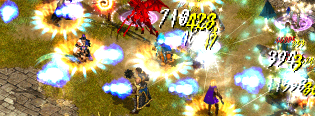
闘士 ダンシングレイジス 専用強化スキル プラズマブラスト（Aura Blast） （前提スキル プラズマボルト）
最小射程距離がなくなり、射程距離が大幅に拡大されました。
プラズマボルト SLv50 1〜2.5m ⇒ プラズマブラスト SLv1 6m
さらに、プラズマブラストで敵を倒すと消費CPの半分を回復するようになりました。
| 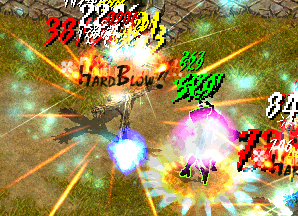 |
闘士 ダンシングレイジス 専用パッシブスキル オーバーヒット（Over Hit） 全てのスキルの強打確率が10％増加。 強打が発動すると 『HARD BLOW！』の表示がでて、 ダメージが3倍になります。 |
| 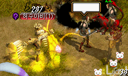 |
悪魔 アンタッチャブルボンテージ 強化スキル ダイナマイトボディ（Drag Body） （前提スキル ドローボディー） 追加でワームバイトの効果が発動するようになりました。 |
| 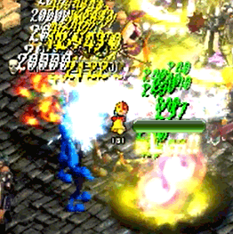 |
ネクロマンサー ストレンジコンジュラー 専用パッシブスキル ライフスティール（Bloodsucking Attack） 物理ダメージの3％をHP吸収。 覚醒スキルだけでなく、通常スキルや悪魔のスキルにも効果が適用されます。 専用強化スキル パヒュームオブデス（Scent of Death） （前提スキル 死の香り） 闇ダメージが大幅に増加しました。 死の香り SLv50 闇ダメージ77 ⇒パヒュームオブデス SLv1 闇ダメージ385 暴かれた納骨堂B1にて、デスピンサーをまとめて範囲狩り。 |
| 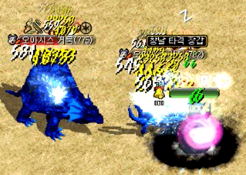 |
強化スキル ダークネストリック（Ruse） （前提スキル ダークネスイリュージョン） ダークネストリック使用時に力が高くなった場合は攻撃力が100％増加。 強化スキル ネームレスアタック （Advanced Nameless Attack） （前提スキル フルアタック） 射程距離1mの単体攻撃から 1.5mの範囲攻撃になりました。 乾いたオアシスでも、オアシスタートルとオアシスキャンサをまとめ狩り。 |
| 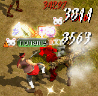 |
ビーストテイマー 慈愛の民 専用パッシブスキル ピクニック日和 （Fine Weather for a Picnic） ペットの系統に関わらず、 天気系スキルの効果を発揮。 ただし、悪魔型でないペットに風雨の日を使用した場合は、同レベルのヘイストが適用されます。 召喚獣にも風雨の日の効果が適用可能。 |
| 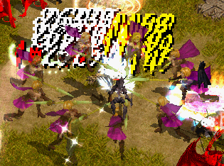 | ランサー ヴァンガードキャバリエ 強化スキル エントラップメントインペール （Entrapment Impale） （前提スキル エントラップメントピアシング） 命中率の低下が -5％ ⇒ -3％ に軽減されました。 |
エレメンタルランサー 専用パッシブスキル 元素合成（Elemental Synthetic）
着用している刺青の属性種類に関係なく、着用した刺青の数値だけ自分のすべての属性数値が上昇。
ランサー時だけでなく、アーチャー時でも全属性魔法攻撃力上昇の効果が適用されます。
ビーストテイマーペット 6種追加
エリートモンスター6種類が追加されました。
真心の民 専用パッシブスキル 新しい友達（New Friend）を習得したビーストテイマーのみ、テイムできます。
エリートモンスターをテイム後に、覚醒タイプを変更することは可能。エリートペットをそのまま使用できます。
また、ギルドバトルフィールドでもエリートペットを使用することができます。
| エリートモンスター | Lv | 出現場所 | 出現時間 | |
|---|---|---|---|---|
| 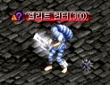 | エリートハンター | Lv300 | 名もない崩れた塔B1 （55.20）付近 1匹 |
4時間30分 |
| 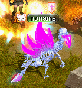 | エリートキメラ | Lv300 | スウェブタワーB1 2匹 |
8時間 |
| 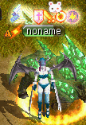 | エリートサキュバス | Lv300 | トラン森北部 2匹 |
8時間 |
| 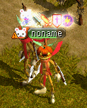 | エリートパンプキン | Lv400 | 暴かれた納骨堂B1 1匹 |
8時間 |
| 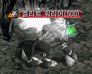 | エリート戦士 | Lv500 | 呪われたミズナの洞窟B1 （20.70）付近 1匹 |
12時間 |
| 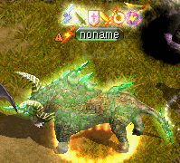 | エリートバッファロー | Lv600 | トラン森中部 1匹 |
18時間 |
| 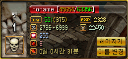 |
エリートキメラ 唐辛子なしのステータス 慈愛の民 強化スキル 褒め殺し（Cheer Up） （前提スキル 誉める）によって、ペットのLvが126上昇しています。 最大上昇Lv150まで。 |
| 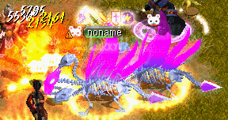 |
エリートキメラ 唐辛子なし エリートペットの使用スキルは既存のモンスターと同様ですが、従来よりも少しステータスが強化されているようです。 |
| 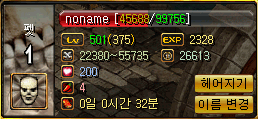 |
エリートキメラ 唐辛子ありのステータス |
| 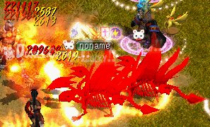 |
エリートキメラ 唐辛子あり |
| 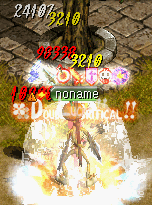 |
エリートパンプキン 辛子なし |
| 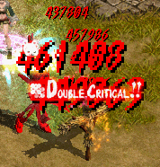 |
エリートパンプキン 辛子あり |
| 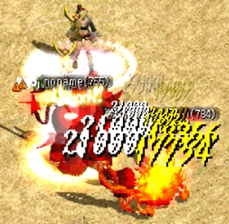 |
エリート戦士 辛子あり 乾いたオアシスのオアシスキャンサにカンストダメージ。 |
| 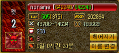 |
エリートサキュバス 辛子ありのステータス |
| 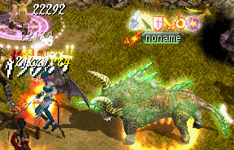 | エリートサキュバスとエリートバッファロー。 |
イベント
覚醒システムの追加を記念して、各種イベントが開催されています。
9月25日〜10月23日
◆覚醒システムが追加された10職のキャラクターで覚醒クエストを完了すると、サナの材料箱と
スキル/ステータス再分配巻物をプレゼント。また抽選で奇妙な紫苑の壺が当ります。
◆イベントNPCより、ユニークアイテムレンタルできます。
◆攻略情報を投稿して、最も評価の高かった投稿者にお好きなチケットをプレゼント。
9月28日〜10月20日
◆毎週、土日は経験値＆ゴールドドロップが2倍。
| 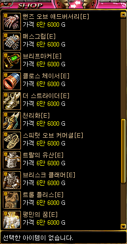 | イベントNPCにて販売されているレンタル用ユニークアイテム。 チャームによる割引も適用されます。 |
決戦
日韓戦に向けたスキル仕様調整のため一時クローズされていた決戦ワールドは、10月2日から再オープンしました。
メイドは日本と同様に、キャラクター作成はできますが装備販売NPCがいません。
※韓国のエントリー期間が一週間延長され、スケジュールが一部変更になりました。
| スケジュール | 韓国 | 日本 |
|---|---|---|
| 決戦ワールドオープン | 10月2日 | 9月26日 |
| エントリー期間 | 9月26日〜10月23日 | 10月1日〜10月17日 |
| 構成チームと対戦表発表 | 10月25日 | - |
| オンライン予選 | 10月25日〜11月1日 （ベスト8決定） | 10月18日18:00〜11月18日11:00 |
| 11月2日13時 （ベスト4決定） | ||
| オフライン決勝 | 11月9日13時 （代表選抜） | 12月14日 |
| 日韓戦 | 12月14日 |
以下、韓国GMより発表された内容を一部抜粋。
こんにちはGMミックです。
赤い宝石最強戦士イベントについて、気になることがあれば何でも聞いてください〜！！
5人で1チームを結成して参加することもできますし、個人別でエントリーした場合はサーバー別や地域別にチームを自動マッチングする予定です。
サッカー韓日戦のように今回日本でしたら次は韓国で進行するでしょう？＾＾
また、個人旅行費用を除いた宿泊、交通一切の費用は全て赤い宝石で支援します。
クライアントは日本と同じクライアントを使って大会を進行します。
日本のRED STONEも体験でき東京旅行もでき賞金も多い今回の大会！！
GM達と手を取り合って一緒に行きましょう！！たくさんの参加をお待ちしています＾＾
まずは1:1相談を通してユーザーから寄せられた質問にお答えします。
Q: 1位、2位になって日本に行くのが不安です。。
A: はい、もちろん最近のニュースを見ると不安にならないほうがおかしいくらいですね。
ただし競技が開催される東京が放射能による深刻な問題があれば当然、競技は中止になります。
まだ東京は深刻に憂慮するほどの状況ではないため、大会を進行する予定です。
1位2位になって韓日戦進出チケットをゲットしても、強制的に日本に送るのは絶対に嫌なんです。
韓国最強に挑戦して賞品を受け取っても、韓日戦出場のために日本に行くのが負担になるようであれば日本進出権は棄権されても構いません。
棄権された日本戦進出権は次の順位のチームに自動的に委任される予定です。
気軽に韓国最強戦士になってください！！＾＾
Q: 1位のチームが日本行を棄権して下位チームも全て棄権した場合は、どうなりますか？
A: そうした状況にならないことを願いますが、全ての参加チームが棄権した場合は別の案を公示します。
Q: GM様の年俸はどのくらいですか？
A: 飢えて死なないほどです。
Q: 大会で悪徳商人グントのアイテムを使えないのは確定ですか？5対5決戦マップの修正予定はありませんか？
4対4のほうが柱もあって戦略的要素になり、はるかに面白いのに。
A: 大会では悪徳商人グントのアイテムは使用できません。 決戦マップは協議してみます。
韓日決勝戦の日程をこっそりお知らせします。
◆イベント: REDSTONE Battle Warriors
◆期間: 2013年12月13日(金)〜15日(日)
◆場所: ベルサール秋葉原/東京、日本
◆宿泊: 秋葉原ワシントンホテル（イベント会場より徒歩5分） スタンダードシングル(1人1室) 2泊朝食付き
◆日程:
| 日 | 時間 | 予定 |
|---|---|---|
| 13日(金) | 8:40〜10:05 | ソウル発〜東京着 （GIMPO空港→羽田空港 JL090便） |
| 17:00〜 | イベント場所確認・リハーサル | |
| 19:00〜 | レセプション | |
| 14日(土) | 13:00〜 | 日本代表決定戦 |
| 15:00〜 | 日韓戦 Battle Warriors | |
| 〜18:00 | イベント終了 | |
| 19:00〜 | 韓国チーム ディナーパーティー | |
| 15日(日) | 19:45〜22:20 | 東京発〜ソウル着 （羽田空港→GIMPO空港 JL095便） |
◆賞品:
| 韓国 | 日本 | |
|---|---|---|
| 賞金 | 1位 50万円 2位 30万円 3位 15万円 4位 5万円 |
|
| 賞品 | 1位 任意の1OPユニークアイテム 2位 奇跡のユニークチケット 3位 究極のユニークチケット ベスト4進出チーム ユニークアイテム/メイドUSB4GB ベスト8進出チーム サナの材料箱5個 |
1位 幸運チケット4種類/覇王の鎧/ネクロマンサーネックレス 2位 幸運チケット1個/覇王の鎧/ネクロマンサーネックレス ベスト4進出チーム [全異常抵抗 DX] [不可視Lv2] [RED STONE] ユニーク指輪 |
韓国代表1位チームの賞品は、100万ウォンと[制限なしのお好きなオプションを付加したユニークアイテム]です。
（ただし支給されるアイテムは取引不可＆取引不可の解除不可・異次元Boxの使用不可）
国内最強の戦士になって最強のアイテムも獲得してください！！
| 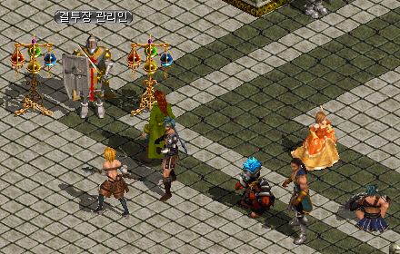 |
韓国の決戦ワールドは 全て無料でプレイできますが、 韓国人プレイヤーにはまったく 人気がないそうです。 オープン初日の1vs1待機所 プレイヤーがわずかに数名。 |
| 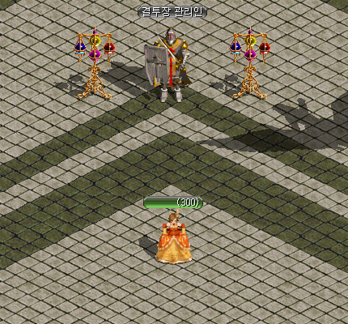 | 2vs2 〜 5vs5待機所には だれもいません。 |
本日のランキングは、1位のキャラクターで1戦1勝のみ。
日韓戦にエントリーするチームさえいない事態に陥る可能性も…。
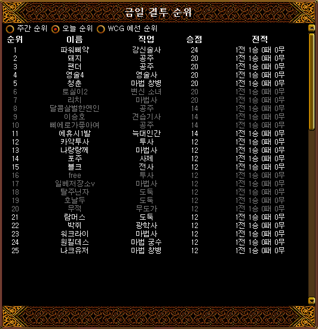
| 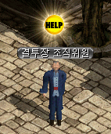 |
決戦ワールドの基本的な仕様は日本と同様ですが、 日本と異なる点はこちらのNPC。 |
| 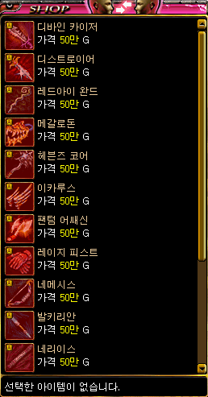 |
伝説の武器が販売されています。 50万Gなのでもちろん所持金が足りないため、 購入することはできません。 伝説の武器は、韓国ネットカフェ特典用のアイテム。 本来はイベント期間中のみ公認ネットカフェにて、 無料でレンタルできるユニークアイテムです。 |
 |
ディバインカイザー <基本情報> 取引不可アイテム 攻撃力 55~59(1.00秒) 射程距離 100 ダメージ +250％ 知識 +200 CP獲得ボーナス 30％ 攻撃速度 +50％ アンデッド型キャラクターに追加で100％のダメージを与える。 スキルレベル +4 <要求能力値> レベル 1 <着用可能な職業> 剣士 |
| 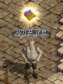 |
そしてもう一人のNPC悪徳商人グント。 2013年の日本仕様では未実装となっていますが、 韓国では実装されていました。 ※予選大会の開催に伴い、韓国でも削除されました。 |
| 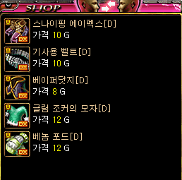 |
12時30分〜13時 15時30分〜16時 18時30分〜19時 21時30分〜22時 の時間帯限定で、通常のNPCでは販売されていない アイテム5つを購入できます。 スナイピングアペックス[D] ⇒ 決戦 足 騎士用ベルト[D] ⇒ 決戦 ベルト 霧の隠れ蓑[D] ⇒ 決戦 首 グリムジョーカーの帽子[D] ⇒ 決戦 兜 ベノムポッド[D] ⇒ 決戦 グローブ |
| 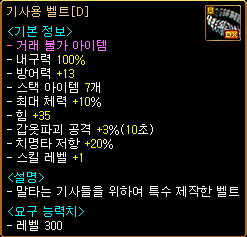 |
騎士用ベルト[D] <基本情報> 取引不可アイテム 防御力 +13 スタックアイテム 7個 最大HP +10％ 力 +35 鎧破壊攻撃 +3％(10秒) 致命打抵抗 20％ スキルレベル +1 |
| 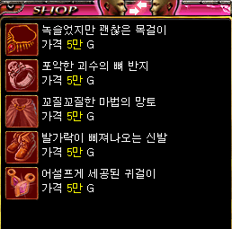 | 特定の時間帯以外では、要求Lv301のノーマルアイテムが5万Gで販売されています。 |
10月25日にトーナメントが発表されました。
参加チームなしの事態は何とか免れたようですが、エントリーしたのは16チームのみ。
2勝するだけでベスト4入りが確定し、賞品のメイドUSBがもらえます…。
ただし、韓国ではオンライン予選の時から1チームに同一職業のキャラクター（裏職を含む）を複数入れることが禁止されているため、チーム構成が勝敗を左右する重要な要素になりそうです。
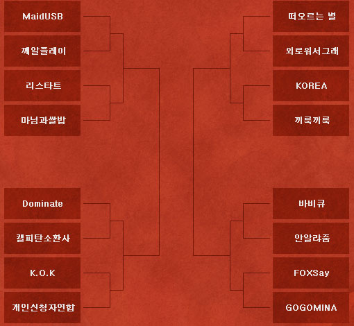
10月26日、27日、31日に予選一回戦が行われました。
予選大会は3戦中2勝を先取したチームが勝ち上がりとなります。
GMも登場し、いつもは人の少ない決戦会場にたくさんの人が集まっています。
GMの名前の横についてるPC+マークは、公認ネットカフェよりログインした場合の表示です。
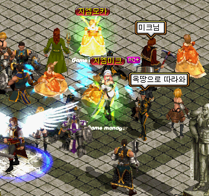
◆10月26日（土）16時〜 [浮び上がる特別] 対 [ウェロウォソグレ]
2対0で[浮び上がる特別]チームが勝利。
◆10月27日（日）14時〜 [Dominate] 対 [掘るピータン召還社]
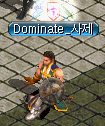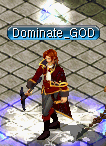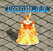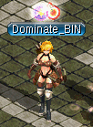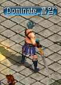
[Dominate] 対 [掘るピータン召還社] の試合を開始します。
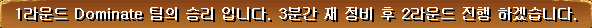
1ラウンド Dominateチームの勝利です。3分間の調整後、2ラウンドを始めます。
2ラウンド 開始します。
[Dominate]チームが勝利し、8強進出を決めました。おめでとうございます。
2対0で[Dominate]チームが勝利。
◆10月27日（日）15時〜 [KOREA] 対 [しきりに首を前に伸ばしてしきりに首を前に伸ばして]
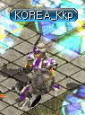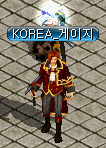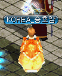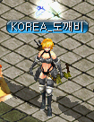
[KOREA]チームは[しきりに首を前に伸ばしてしきりに首を前に伸ばして]チームの棄権により、8強進出を決めました。
優勝候補と言われている強豪[KOREA]チームは、初戦は不戦勝となりました。。
試合日時の連絡が遅れていたため、[しきりに首を前に伸ばしてしきりに首を前に伸ばして]チームのメンバーが集まらなかったそうです。
BIS/WIZ/姫/アチャ/他火力といった構成が多いのは、韓国では武器変身したプリンセスのボトル投げが使用可能なためと思われましたが、武器姫ではなくスリング殴り姫でした。
◆10月27日（日）19時〜 [FoXSaY] 対 [GOGOMINA]
2対0で[FoXSaY]チームが勝利。
10月31日予選一回戦の最終日。
この日のチーム構成はBIS/WIZ/光奏/アチャ/闘士ばかりだったようです。
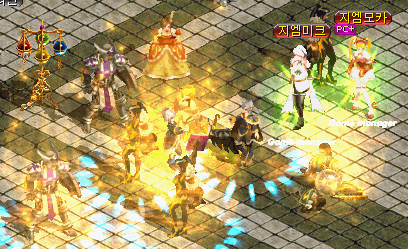
◆10月31日（木）17時〜 [MaidUSB] 対 [ゴマ粒プレー]
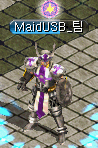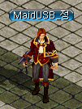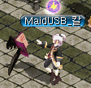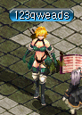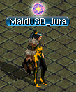
[ゴマ粒プレー]チームの棄権により、[MaidUSB]チームの不戦勝となりました。
◆10月31日（木）18時〜 [リスタート] 対 [マニムグァサルバプ]
マニムグァサルバプ チームとリスタート チームは5vs5待機所で待機してください。
マニムグァサルバプ チームとリスタート チームは決闘申請をしてください。競技を開始します。
マニムグァサルバプ チームが1ラウンドで勝利しました。3分間の調整後、2ラウンドの競技を開始します。
マニムグァサルバプ チームとリスタート チームは決闘申請をしてください。2ラウンドの競技を開始します。
リスタート チームが勝利しました。3分後、3ラウンドの競技を開始します。
決戦スコアは1:1です。
マニムグァサルバプ チームとリスタート チームは決闘申請をしてください。3ラウンドの競技を開始します。
リスタート チームが勝利して8強戦に進出しました。お祝い申し上げます。
両チームともお疲れさまでした。
2対1で[リスタート]チームが勝利。
◆10月31日（木） [K.O.K] 対 [個人出場者連合]
[個人出場者連合]チームは2人の棄権により失格となり、[K.O.K]チームが不戦勝となりました。
◆10月31日（木） [アナルリャジュム] 対 [バーベキュー]
[バーベキュー]チームのメンバーが開始時間に間に合わず、[アナルリャジュム]チームの不戦勝となりました。
GMミック「ベスト8進出を決めた8チームのみなさんお疲れさまでした。
1:1相談やお電話にて、11月2日（土）の対戦可能な時間を申請してください。」
予選一回戦は8試合中4試合が不戦勝という波乱な？展開となったため、希望時間が申請できるようになったようです。
11月2日に予選一回戦を突破した8チームによるベスト4決定戦が行われました。
◆11月2日（土）13時〜 [FoXSaY] 対 [アナルリャジュム]
1ラウンドは[FoXSaY]チームが[アナルリャジュム]チームの復活地点にローズガーデン＆真空を出し、逃げる敵を悪魔がドローで引っ張り込む連携プレーにより、25：4で[FoXSaY]チームが圧勝。
2ラウンドも25：7で[FoXSaY]チームが制し、2対0で[FoXSaY]チームが勝利。
◆11月2日（土）18時〜 [KOREA] 対 [浮び上がる特別]

[KOREA]チームは闘士が1人で特攻し、他の4人が後方から援護。
[浮び上がる特別]チームは全員でタゲを合わせますが、圧倒的な強さの闘士になすすべなく、
1ラウンドは25：12、2ラウンドは25：10、2対0で[KOREA]チームがストレート勝ち。
◆11月2日（土）19時〜 [Dominate] 対 [K.O.K]
[K.O.K]チームはWIZと光奏が強力な範囲攻撃で一撃必殺の火力ゴリ押し型。
対する[Dominate]チームはバランス火力型。
一回戦の時はBIS/WIZ/姫/アチャ/戦士のパーティー構成でしたが、戦士を闘士に変更して二回戦に挑みました。
[K.O.K]チームは高ダメージを与えましたが、[Dominate]チームが冷静にタゲを合わせて確実に1人ずつ撃破。
1ラウンドは25：19、2ラウンドは25：16、安定したプレーで[Dominate]チームが勝利。
◆11月2日（土）21時〜 [maidUSB] 対 [リスタート]
[リスタート]チームは一回戦での反省を生かし、BIS/WIZ/光奏の装備を変更して二回戦に臨みました。
序盤は[リスタート]チームのWIZと光奏が強烈な4桁ダメージで攻めましたが、[maidUSB]チームも後半で巻き返し、接戦の末1ラウンドは24：25で[リスタート]チームの勝利。
2ラウンドでは[maidUSB]チームが本来のチームワークを発揮して25：5で圧勝。
3ラウンドも25：15で[maidUSB]チームが勝利。
2対1で[maidUSB]チームがベスト4進出を決め、目標だった賞品のメイドUSBを獲得しました。
ベスト4までのトーナメント結果は以下の通りです。
11月9日のオンライン大会にて4チームが対戦し、韓国代表2チームが決定される予定でしたが、[maidUSB]チームと[Dominate]チームの棄権により、自動的に[KOREA]チームと[FoXSaY]チームが韓国代表として日韓戦に出場することが決まり、韓国最強決定戦のみが行われました。
◆11月9日（土）13時〜 [KOREA] 対 [FoXSaY]
GMモードで見た各プレイヤーのHP
[KOREA]チームの姫は武器変身を巧みに利用してパーティーメンバーの間を移動し、絶妙なタイミングで鞄から飛び出してスリング殴り＆闘士の竜撃破と共に連続攻撃で一気に敵を撃破。
[FoXSaY]チームは得意のローズガーデン＆真空＆ドローのコンビネーションプレイができないまま、1ラウンドは25：8で[KOREA]チームが圧勝。
2ラウンドは[FoXSaY]チームがソウルプランダー＆ダークネスイリュージョンで応戦しますが、やや火力不足が否めず25：16で[KOREA]チームが勝利。
2対0で[KOREA]チームがストレート勝ちし、前回大会に続いて2連覇を達成しました。
最終イベント、日韓エキシビジョンマッチは12月14日（土）15:00〜開始予定です。
初出場で大健闘している[FoXSaY]チーム！
WCG2009で総合優勝し、今年の日韓戦でも2連覇を目指す[KOREA]チーム！
強豪韓国チームに対抗できるか！？日本チームの活躍に期待しています。